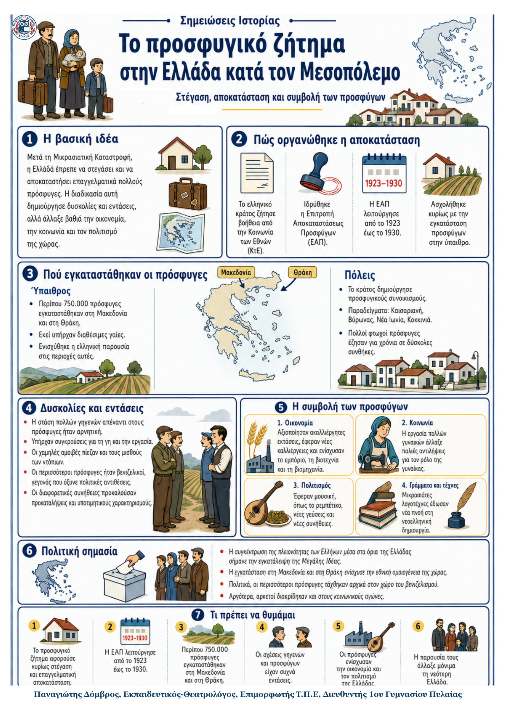

Δεν βρέθηκε η λέξη ή η φράση μέσα στην ενότητα.
1Η βασική ιδέα
Μετά τη Μικρασιατική Καταστροφή, η Ελλάδα έπρεπε να στεγάσει και να αποκαταστήσει επαγγελματικά εκατοντάδες χιλιάδες πρόσφυγες. Η εγκατάστασή τους δημιούργησε δυσκολίες και εντάσεις με τους γηγενείς. Παράλληλα, όμως, οι πρόσφυγες άλλαξαν βαθιά την οικονομία, την κοινωνία και τον πολιτισμό της χώρας.
2Η αποκατάσταση των προσφύγων
- Το ελληνικό κράτος ζήτησε βοήθεια από την Κοινωνία των Εθνών και εξασφάλισε δάνειο.
- Ιδρύθηκε η Επιτροπή Αποκαταστάσεως Προσφύγων (ΕΑΠ), η οποία λειτούργησε από το 1923 έως το 1930.
- Η ΕΑΠ ασχολήθηκε κυρίως με την εγκατάσταση προσφύγων στην ύπαιθρο.
- Περίπου 750.000 πρόσφυγες εγκαταστάθηκαν στη Μακεδονία και στη Θράκη, όπου υπήρχαν διαθέσιμες γαίες.
- Στις πόλεις το κράτος δημιούργησε συνοικισμούς, όπως Καισαριανή, Βύρωνας, Νέα Ιωνία και Κοκκινιά.
3Από την άφιξη στην εγκατάσταση
1. Άφιξη Μεγάλος αριθμός προσφύγων φτάνει στην Ελλάδα μετά το 1922. |
2. Στέγαση και εργασία Το κράτος και η ΕΑΠ οργανώνουν κατοικίες, γη και επαγγελματική αποκατάσταση. |
3. Ένταξη Οι πρόσφυγες δημιουργούν νέες κοινότητες και εντάσσονται σταδιακά στην κοινωνία. |
|---|
4Οι δυσκολίες και οι εντάσεις
- Πολλοί φτωχοί πρόσφυγες έζησαν για χρόνια σε πρόχειρα και ανθυγιεινά οικήματα.
- Οι γηγενείς συχνά θεωρούσαν ότι οι πρόσφυγες έπαιρναν γη ή εργασία που ανήκε στους ίδιους.
- Οι χαμηλές αμοιβές των προσφύγων πίεζαν προς τα κάτω και τους μισθούς των ντόπιων.
- Οι πολιτικές διαφορές όξυναν την ένταση, επειδή οι περισσότεροι πρόσφυγες ήταν βενιζελικοί.
- Οι διαφορετικές συνήθειες, τα φαγητά και τα ονόματα προκαλούσαν προκαταλήψεις και υποτιμητικούς χαρακτηρισμούς.
5Η μεγάλη συμβολή των προσφύγων
| Πολιτική και εθνική ομοιογένεια | Η εγκατάσταση στη Μακεδονία και στη Θράκη ενίσχυσε την ελληνική παρουσία και συνέβαλε στην εγκατάλειψη της Μεγάλης Ιδέας. |
|---|---|
| Οικονομία | Αξιοποιήθηκαν ακαλλιέργητες εκτάσεις, εφαρμόστηκαν νέες καλλιέργειες και αναπτύχθηκαν εμπόριο, βιοτεχνία και βιομηχανία. |
| Κοινωνία | Οι γυναίκες πρόσφυγες εργάστηκαν σε πολλούς κλάδους και συνέβαλαν στην αμφισβήτηση παλιών στερεοτύπων. |
| Πολιτισμός | Η μουσική, η κουζίνα, οι συνήθειες και οι Μικρασιάτες λογοτέχνες έδωσαν νέα πνοή στη νεοελληνική κοινωνία. |
Τι πρέπει να θυμάμαι
|
|
